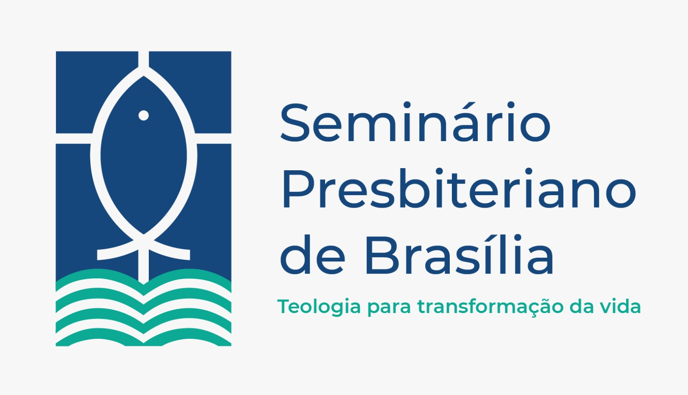

Seminário Presbiteriano de Brasília
Materiais de Língua Portuguesa
Selecione sua turma para acessar as aulas e os materiais didáticos disponibilizados pelo curso.

Selecione sua turma para acessar as aulas e os materiais didáticos disponibilizados pelo curso.